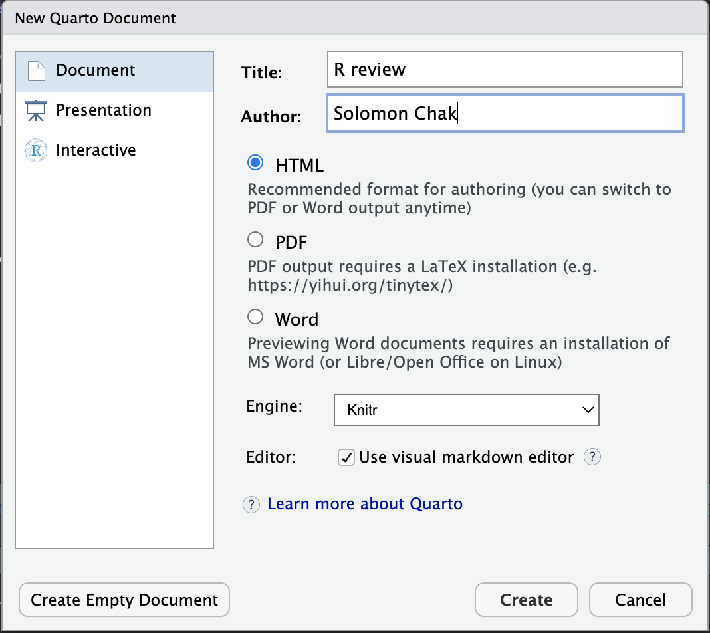

date: "`r Sys.Date()`"
toc: true
toc-depth: 1
toc_float: true
number-sections: true
number-depth: 2
code-overflow: wrapR Quarto
1 What is Quarto?
Quarto enables you to weave together content and executable code into a finished document. To learn more about Quarto see https://quarto.org.
You can combine your R codes (any many common programming languages) and your annotation into a nicely formated html page or pdf file. Other similar tools including R Markdown and Jupyter Notebook serve similar functions.
2 Starting a Quarto Document
On RStudio of posit.cloud, click File > New File > Quarto Document. You also click the “green +” button on the upper left.
Provide a title for the document (e.g., “R Review”) and the author name. Leave everything else as default.

You will now have a new Quarto document that is showing the “Visual” editor. Click the “disk” button to save the document (e.g., as R_review). The extension of the file will be .qmd, which stands for Quarto Markdown.

Notice that the title and author that you entered in the last windows appears in a box. There are other elements such as titles, text, and “code chunks” where your R codes are shown. You can run those codes by clicking the green “play” button on the upper right.
Click the “Source” button on the upper left to show the source code that generates this visual editor. You will now see a more familiar R script interface. You can build your documents in either the Source or the Visual editors, but we will begin with the Visual editor since it gives us a better sense of what the final webpage will look like.

Now click “Render” on the top. It will render your .qmd document into a webpage.
3 Metadata
In the visual editor, the first element that are between “---” are the metadata. Notice that it looks a little different after rendering. Here’s where some global settings to the whole quarto document can be added.
For example, adding these will above the second “---” add the date (pulling it from R’s system date), add a floating table of content (toc), automatically number the sections (for two header depth), and set up the code chunk to wrap overflowing codes. Render the document again to see the effects.
A lot more options can be set in the section. See here for more information.
4 Header and Text
In the visual editor, if you begin a new with #, it will automatically set the line to be header level 1. If you begin with ##, it will set the line to header level 2.
You can also highlight the text and use the top manual bar to set the header levels.

Other lines without a # are set as normal text by default.
You can surround text by a pair of ` to mark it as code. Or use Ctrl + D to set a highlighted text to be code.
You can insert images from a URL. You can also use a local file, but be award that the image file (ideally in a folder) will also need to be uploaded if you are hosting your html somewhere (e.g., GitHub Pages).
You can insert a link by Ctrl + K .
5 Code Chunks
You can insert code chunks by Ctrl + Alt + I (Macs: Cmd + Option + I). A new box that begins with {r} will appear. This is where you will put your R code. You can run commands as if you are in a R script file.
There are a lot of settings that can be done on individual code chunks. There settings should appear within the { } and be separated by ,. All of these are R markdown settings, but many of them could be set as Quarto settings. See here.
Commonly used ones are:
results = 'hide'prevents the result to be shown in the rendered file. This is useful when you have results that are very long, but you could get away with using%>% head()message = FALSEprevents messages to be shown in the rendered file. This is useful for loading libraries.warning = FALSEprevents warnings to be shown in the rendered file.eval = FALSEprevents code to run when rendering. But the code will still display.
Figures related:
fig.show = 'hide'presents the figure to be shown. This is useful when you only want to show the code but not the resulting plot.echo = FALSEprevents code, but not the results from appearing in the rendered file. This is a useful way to embed figures without showing the codes.fig.cap = "..."adds a caption to graphical results.
Special uses:
collapse = TRUEwill display the code and the result together inside code chunk when rendered.include = FALSEprevents code and results from appearing in the finished file. R Markdown still runs the code in the chunk, and the results can be used by other chunks. This is a useful way to load a private dataset that you don’t want to make publish yet.
Using Quarto setting (begins with #|), you can make the code (and results) hidden but expandable by readers.
{r, collapse=TRUE}
#| code-fold: true